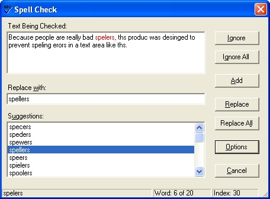

Title: NetSpell - Spell Checker for .net Author: Paul Welter Email: pwelter@loresoft.com Environment: C#, ASP.NET, XP, W2K, Win2003, .NET 1.1, .NET 1.0, NT4 Keywords: Spell Checker, Control Level: Intermediate Description: The NetSpell project is a spell checking engine written entirely in managed C# .net code. Section C# Controls SubSection General

The NetSpell project is a spell checking engine written entirely in managed C# .net code. NetSpell's suggestions for a misspelled word are generated using phonetic (sounds like) matching and ranked by a typographical (looks like) score. NetSpell supports multiple languages and the dictionaries are based on the OpenOffice Affix compression format. The library can be used in Windows or Web Form projects. The download includes an English dictionary with dictionaries for other languages available for download on the project web site. NetSpell also supports user added words and automatic creation of user dictionaries. It also includes a dictionary build tool to build custom dictionaries.
The root of all spell checkers is a word list, aka the dictionary. The dictionary contains a list of common words for a language. For example, the US English dictionary that comes with this package contains 162,573 words.
When designing the dictionary for NetSpell I wanted the dictionary to be a single file, be as small as possible and load extremely fast. I experimented with many different ways to save and load the large word lists. Techniques I tried ranged from a saved dataset to a binary serialized collection, all of which proved to be too slow. I ended up using the good old UTF8 text file. Loading and parsing a text file proved to be extremely fast.
The first issue I wanted to tackle was the file size. Any compression scheme would have to decompress really fast. I first tried using zip. While the dictionary loaded in the one second range, it was still not fast enough to be used in a web environment.
My research into spell checkers turned up a popular technique called Affix Compression. Affix Compression is using a base word and adding prefixes and suffixes to it to create other words. The affix compression scheme was originally developed by Geoff Kuenning for his ISpell spell checker. The OpenOffice project expanded the Affix Compression scheme to simplify its rule definitions. The NetSpell Affix implementation is largely based on the OpenOffice MySpell format. Read the following link to better understand Affix Compression format.
As a result of using the OpenOffice dictionary format, NetSpell dictionaries are easily created from OpenOffice dictionaries. This allows NetSpell to easily support additional languages. The NetSpell download includes a dictionary build tool that allows you to create new dictionaries. The build tool also allows you to import OpenOffice dictionaries and save them to the NetSpell format.
To satisfy the goal of making the dictionary a single file, I needed a way to separate different sections of the file. This would allow for storing different types of data as a word list was not the only data need to be stored. I decided to use the INI section format. I thought about using XML but XML carries a large weight in terms of file size because of the use of tags. I ended up with the following sections in the file.
[Copyright]
The Copyright section contains any copyright information about the word list for
the particular dictionary.
[Try]
The try section contains a sequence of letters that are used to try to make a
correct word out of a misspelled word. They should be listed on a single line in
order of character frequency (highest to lowest). This section is used by
the Near Miss Strategy discussed later.
[Replace]
The replace section contains a sequence of letter combinations that are often
misspelled, for example ei and ie. The data is entered in this section in
a search characters space replace characters format. The ei,
ie example would look like this in the dictionary, "ei ie". This section is used
by the Near Miss Strategy discussed later.
[Prefix]
The prefix section is used to define a set of affix rules for prefixes that can
be attached to the beginning of a base word to form other words. The
format of these rules follows the same format as OpenOffice's affix files except
the PFX is removed. You can read more about the OpenOffice affix format
here
[Suffix]
The suffix section is used to define a set of affix rules for suffixes that can
be attached to the end of a base word to form other words. The format of
suffix rules follows the same format as OpenOffice's affix files except the SFX
is removed. You can read more about the OpenOffice affix format
here
[Phonetic]
The phonetic section is optional and it contains a set of rules that define how
to generate a phonetic code for a character or set of characters. The
phonetic code is generated using Lawrence Philips' Metaphone Algorithm that has
been adapted to a table format by the ASpell project. The NetSpell
dictionary uses the same format that ASpell uses. ASpell phonetic maps can
be used directly by NetSpell. See the following
link to learn more about the ASpell phonetic code.
[Words]
The words section is the list of base words for the dictionary. The
format for this section is word/affix keys/phonetic code. The affix
keys and phonetic code portions are optional. The affix keys portion
indicates which affix rules apply to this word. The phonetic code portion
is a cache of the phonetic code for this word and is used by the phonetic
suggestion strategy.
Another important thing to know about dictionaries are that they are named to match the .net framework CultureInfo.Name property. For example the US English dictionary is named "en-US.dic". The en-US match the CultureInfo.Name property. This allows the NetSpell library to default to the dictionary that corresponds to the computer's regional settings.
Spell checking is normally performed by searching the dictionary for the given word. Now that we've implemented affix compression, searching for the word became more complicated. We have to create base words out of the given word. The process goes like this, first the base word list is searched for the given word. If the word is not found in the base word list, the suffix rules are removed from the word. After a suffix is removed, then the new word is checked to see if it is in the base word list. If the word is still not found, the same process is repeated for the prefixes. If the word can't be found after removing the suffixes and prefixes, then the word is not found in the dictionary and is most likely misspelled.
Once it has been determined that the word is misspell, we need to generate suggestions for the correct spelling of that word. This is where the magic of a spell checker happens. NetSpell uses two different techniques to generate suggestions. The first was developed by Geoff Kuenning for ISpell and is commonly called the near miss strategy. The second is Lawrence Philips' Metaphone Algorithm which returns a code that is a rough approximation of how an English word sounds.
The near miss strategy is a fairly simple way to generate suggestions. Near miss takes the approach that the user didn't necessarily misspell the word but rather they mistyped it. Two words are considered near if they can be made identical by either inserting a blank space, interchanging two adjacent letter, changing one letter, deleting one letter or adding one letter. If a valid word is generated using these techniques, then it is added to the suggestion list. As you might have guessed, the near miss strategy doesn't provide the best list of suggestions when a word is truly misspelled. That is where the phonetic strategy kicks in.
To understand the phonetic strategy, phonetic code needs to be defined. A phonetic code is a rough approximation of how the word sounds. Each character in the code represents a sound. Its important to also understand that the phonetic code does not indicate how to pronounce the word, its only a representation of how it sounds.
The phonetic strategy is comparing the phonetic code of the misspelled word to all the words in the word list. If the phonetic codes match, then the word is added to the suggestion list.
While that process may sound strait forward, it becomes much more complicated when affix compression is introduced. An affix compressed word list only contains base words. We can't just compare the phonetic code of the misspelled word to the word list because the misspelled word may or may not be a base word. To solve this issue, we remove all affix rules that pass the conditions of the rule from the misspelled word and add the resulting string to a possible base word list. An important note to keep in mind is that the possible base word list is not a list of real words. It is only a list of strings that can be made by removing the affix rules from the misspelled word.
Now that we have a list of possible base words from the misspelled word, we can generate the phonetic code on them and compare those codes with the list of base words. If one of the codes match the base word code, we add that word to the list of suggestion. Since we removed all the affix keys and we compared only the base words, an expanded base word could be the correct word. So, we expand the base word that matched by applying all the affix rules to get a list of all the possible words from that base word. We then add that list to the suggestion list.
Once we have a list of suggestions, we need some way to rank them by the most likely to be the correct spelling. My research into the best way to go about this turned up the Edit Distance Algorithm. The edit distance is defined as the smallest number of insertions, deletions, and substitutions required to change one string into another. The NetSpell Edit Distance Algorithm implementation has one slight modification in that it adds an extra edit distance if the first character and last character don't match. The rational behind this is that people generally can get the first character and last character correct when trying to spell a word.
To use the NetSpell Library in your project you simply add a reference to NetSpell.SpellChecker.dll to the project. You can also add the library to the Visual Studio Toolbox to make it easier to interact with the properties. The library is event based so you have to handle the various events. Also, if you set the ShowDialog property to true, the library will using its internal suggestion form to display the suggestion when a MisspelledWord event occurs.
The following code is a very simple implementation of the NetSpell library.
internal System.Windows.Forms.RichTextBox Document;
internal NetSpell.SpellChecker.Spelling SpellChecker;
// add event handlers
this.SpellChecker.MisspelledWord +=
new NetSpell.SpellChecker.Spelling.MisspelledWordEventHandler(this.SpellChecker_MisspelledWord);
this.SpellChecker.EndOfText +=
new NetSpell.SpellChecker.Spelling.EndOfTextEventHandler(this.SpellChecker_EndOfText);
this.SpellChecker.DoubledWord +=
new NetSpell.SpellChecker.Spelling.DoubledWordEventHandler(this.SpellChecker_DoubledWord);
private void SpellChecker_DoubledWord(object sender,
NetSpell.SpellChecker.SpellingEventArgs args)
{
// update text
this.Document.Text = this.SpellChecker.Text;
}
private void SpellChecker_EndOfText(object sender,
System.EventArgs args)
{
// update text
this.Document.Text = this.SpellChecker.Text;
}
private void SpellChecker_MisspelledWord(object sender,
NetSpell.SpellChecker.SpellingEventArgs args)
{
// update text
this.Document.Text = this.SpellChecker.Text;
}
// Start Spell Checking
SpellChecker.Text = this.Document.Text;
SpellChecker.SpellCheck();
The project download includes two example application for the NetSpell Library. The first is a Windows forms text editor. The second is a web project that demonstrats using the library in a web enviroment.
The NetSpell project has been a fun and challenging project to work on. I plan to continue to improve and add new features to the library. The feature that I'm currently working on is real time spell checking, like MS Word. Please feel free to contact me with any suggestions, bug reports and feature request.
Paul Welter
http://www.loresoft.com